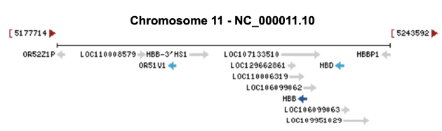
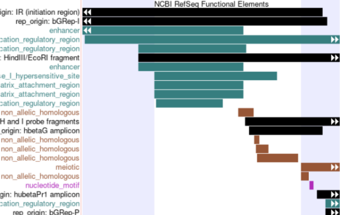
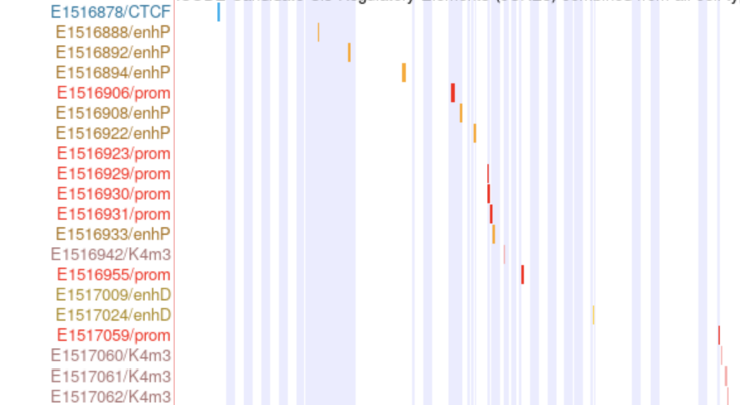
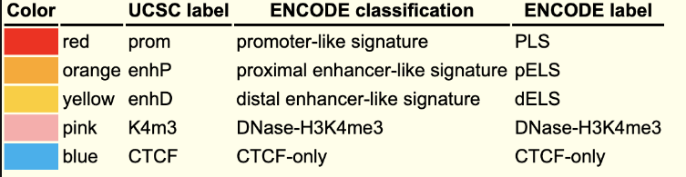
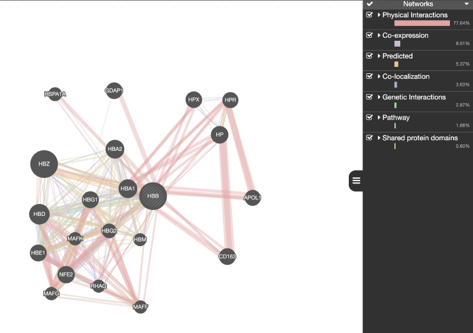

Informação
A HBB é uma subunidade da hemoglobina, que em conjunto com a HBA, formam um dímero de hemoglobina. Se uma molécula de 2,3-bifosfoglicerato se juntar a dois dímeros forma o tetrâmero de hemoglobina.
Este gene encontra-se no cromossoma 11, na posição 11p15.4, contém 3 exões (NC_00001.10; NC_060935.1; NC_000011.9) e o seu ID é: 3043. Além disto, o gene tem um transcrito: NM_000518.5 (comprimento = 628 bp).
Sequência do transcrito de mRNA:
NCBI Reference Sequence: NM_000518.5 1 acatttgctt ctgacacaac tgtgttcact agcaacctca aacagacacc atggtgcatc 61 tgactcctga ggagaagtct gccgttactg ccctgtgggg caaggtgaac gtggatgaag 121 ttggtggtga ggccctgggc aggctgctgg tggtctaccc ttggacccag aggttctttg 181 agtcctttgg ggatctgtcc actcctgatg ctgttatggg caaccctaag gtgaaggctc 241 atggcaagaa agtgctcggt gcctttagtg atggcctggc tcacctggac aacctcaagg 301 cacctttgc cacactgagt gagctgcact gtgacaagct gcacgtggat cctgagaact 361 caggctcct gggcaacgtg ctggtctgtg tgctggccca tcactttggc aaagaattca 421 ccccaccagt gcaggctgcc tatcagaaag tggtggctgg tgtggctaat gccctggccc 481 acaagtatca ctaagctcgc tttcttgctg tccaatttct attaaaggtt cctttgttcc 541 ctaagtccaa ctactaaact gggggatatt atgaagggcc ttgagcatct ggattctgcc 601 taataaaaaa catttatttt cattgcaa
Elementos Regulatórios
O gene HBB (beta-globina) é regulado por uma série de elementos regulatórios que garantem a expressão precisa e controlada da beta-globina.
Promotor
A região promotora do gene HBB contém sequências específicas de DNA que são reconhecidas e ligadas por fatores de transcrição, iniciando a transcrição do gene. Esta região inclui a TATA box, que é essencial para a formação do complexo de iniciação da transcrição.
Locus Control Region (LCR)
A LCR é uma região crítica situada perto do cluster de genes da beta-globina. A LCR contém múltiplos enhancers e é crucial para a regulação de alta expressão e específica ao tipo celular dos genes da beta-globina durante o desenvolvimento. É composta por várias sequências de domínio de hipersensibilidade à DNase I (HS), sendo HS2, HS3, HS4, HS5 os mais bem caracterizados. Esses domínios são fundamentais para a abertura da cromatina e a facilitação da interação entre o promotor do HBB e os enhancers.
Enhancers
São sequências de DNA que regulam e aumentam a transcrição do gene HBB ao facilitar a ligação de proteínas ativadoras específicas, dependendo de sinais específicos, nomeadamente de desenvolvimento e diferenciação celular.
Silencers e Insuladores
Esses elementos regulatórios atuam para reprimir ou isolar a expressão do gene HBB, garantindo que ele não seja ativado indevidamente. Silencers inibem a transcrição, enquanto insuladores bloqueiam a influência de enhancers ou repressão de genes adjacentes.
Fatores de Transcrição
Vários fatores de transcrição se ligam ao promotor e a outros elementos regulatórios do gene HBB para controlar sua expressão. Alguns fatores importantes incluem GATA-1, KLF1 (Erythroid Kruppel-like Factor), e NF-E2, que são essenciais para a regulação específica ao tipo celular e ao estágio de desenvolvimento.

Interações do Gene
